Todo lo que puede hacer la aplicación y cómo hacerlo paso a paso: clientes, SIRE de ventas y compras, motor de correcciones, lupa del comprobante, generación del archivo para SUNAT, buzones, prorrata y más.
Dirección de la demo: https://inspiring-dasik-3dae45.netlify.app Versión: demo navegable del producto final (release 1 + vista previa de release 2) Fecha: noviembre de 2026
Demo con datos 100 % ficticios. No se conecta a SUNAT y no guarda nada en servidores: todo vive en tu navegador.
Contenido
Qué es ContApp y qué es esta demo
Qué hace la aplicación · Qué es real y qué es simulado · Etiquetas R1 y R2
Primeros pasos
Entrar con un rol · Partes de la pantalla · Panel principal · Reiniciar la demo
Clientes
Lista de clientes · Nuevo cliente con consulta RUC · Importación masiva · Ficha del cliente y credenciales
Trabajos en segundo plano y notificaciones
Registro de Ventas (RVIE)
Descargar la propuesta · Auditoría de correlatividad · Agregar una venta faltante · Resumen y filtros
Registro de Compras (RCE)
Descargar la propuesta · La grilla · El motor de correcciones · La lupa · Casos resueltos uno por uno · Edición tipo Excel · Clasificación masiva · Excluir y restaurar · Deshacer · Agregar y exportar · Resumen por casillero · Marcar como revisado
Generar el archivo para SUNAT
Resumen de cambios · Prevalidación · Generar TXT y ZIP · Versiones · Envío a SUNAT
Funciones de la release 2 (vista previa)
Clasificación según historial (zona selva) · Reglas aprendidas · Buzones SOL · Prorrata e IGV estimado
Auditoría, usuarios, roles y plan
Recorrido sugerido de 10 minutos
Datos de prueba y preguntas frecuentes
1. Qué es ContApp y qué es esta demo
Qué hace la aplicación
ContApp es una plataforma para estudios contables en Perú. Cada estudio administra los RUC de sus clientes y, por cada uno, revisa y corrige la propuesta del SIRE (Registro de Ventas e Ingresos y Registro de Compras) antes de declarar. La aplicación:
Descarga la propuesta de ventas y compras de cada cliente con sus credenciales SOL/SIRE.
Detecta automáticamente los errores típicos del SIRE: ISC mal ubicado, facturas mixtas, redondeos en dólares, proveedores nuevos y posibles gastos personales.
Muestra el XML de cada comprobante en lenguaje humano para decidir sin salir de la tabla.
Permite editar la propuesta como una hoja de cálculo y clasificar cada compra en DG, DGNG o DNG.
Valida todo con las reglas de SUNAT y genera el archivo de reemplazo (TXT dentro de un ZIP) para que no salga «procesado con errores».
En la release 2: aprende la clasificación por proveedor, revisa los buzones SOL de todos los clientes y calcula la prorrata y el IGV estimado.
Qué es real y qué es simulado en la demo
Parte
En la demo
Detalle
Motor de correcciones
Real
Es el mismo código del producto. Las reglas R-ISC, R-MIX, R-RED, R-NEW y R-GP dan exactamente los mismos resultados.
Cálculos de dinero
Real
Montos exactos con dos decimales y redondeo de SUNAT. No hay errores de coma flotante.
Prevalidación, resumen de cambios y TXT
Real
Mismo código del producto. El formato del TXT es la versión provisional; la estructura oficial de SUNAT se carga después.
SUNAT (API SIRE, SOL, XML)
Simulado
Las descargas devuelven datos ficticios con tiempos de espera realistas.
Servidor, base de datos y cola de trabajos
Simulado
Todo corre en tu navegador. Lo que haces se guarda solo en él.
Etiquetas que verás
R2 marca funciones de la release 2 que la demo muestra como vista previa (historial, buzones, prorrata, envío a SUNAT).
XML simulado indica que el XML lo generó el simulador; en el producto vendrá de SUNAT.
El banner amarillo superior recuerda siempre que los datos son ficticios.
2. Primeros pasos
Entrar con un rol
Abre la dirección de la demo. No hay contraseña: eliges con qué usuario ficticio entrar. Cada rol tiene permisos distintos, igual que en el producto.
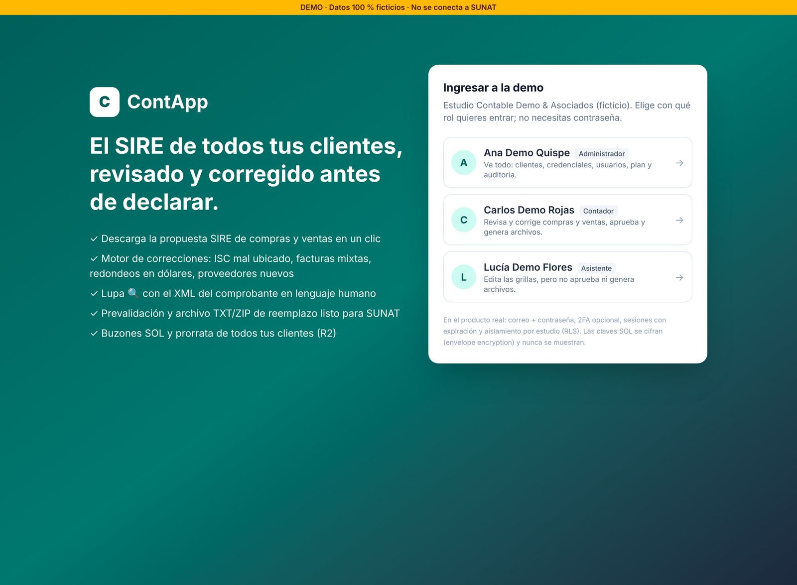
Pantalla de ingreso: elige un usuario para entrar.
Usuario
Rol
Qué puede hacer
Ana Demo Quispe
Administrador
Todo: clientes, credenciales, usuarios, plan, auditoría, aprobar y generar archivos.
Carlos Demo Rojas
Contador
Revisar y corregir ventas y compras, aprobar y generar archivos, gestionar clientes y credenciales.
Lucía Demo Flores
Asistente
Editar las grillas. No puede generar archivos ni editar un periodo ya marcado como revisado.
Recomendación: entra como Carlos Demo Rojas (Contador) para recorrer todo el flujo.
Partes de la pantalla
Menú izquierdo: Panel, Clientes, Trabajos, Buzones SOL, Prorrata e IGV, Auditoría, Usuarios y plan, y la Guía de la demo. En el celular se abre con el botón ☰.
Barra superior: uso del plan (por ejemplo «5/10 RUC») y la campana 🔔 de notificaciones.
Pie del menú: tu usuario, el botón Salir (para cambiar de rol) y ↺ Reiniciar demo.
Panel principal
Es lo primero que ves. Resume el estado de todo el estudio:
Indicadores: clientes activos frente al límite del plan, periodos por presentar, mensajes críticos de buzón y credenciales con problemas.
Clientes del periodo: estado de cada cliente (Sin descargar, En revisión, Revisado, Archivo generado, Enviado a SUNAT) y un acceso directo a sus compras.
Mensajes críticos de los buzones y actividad reciente del equipo.
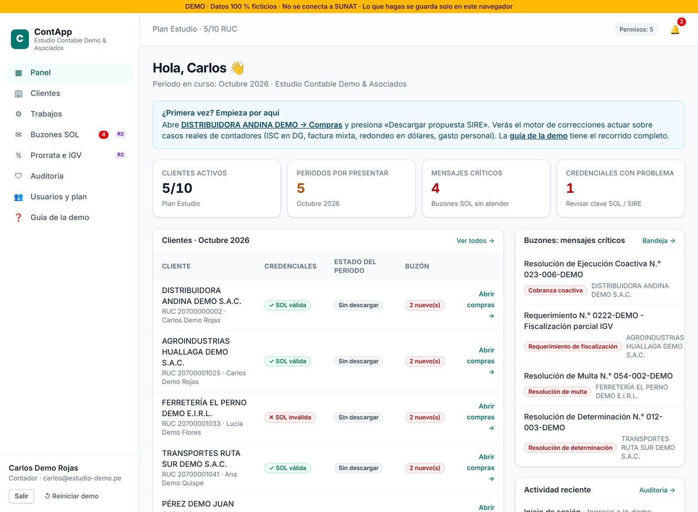
Panel principal del estudio.
Reiniciar la demo
Todo lo que haces queda guardado en tu navegador: si cierras y vuelves, sigue igual. Para empezar de cero pulsa ↺ Reiniciar demo al pie del menú y confirma. Cada persona que abre la demo tiene su propia copia de los datos.
3. Clientes
Lista de clientes
Menú Clientes. Muestra todos los RUC del estudio con su ubicación (con la marca Selva si corresponde), régimen, estado de las credenciales SOL y SIRE, estado del periodo actual y responsable. El ✉️ junto al nombre indica mensajes nuevos en su buzón.
Busca por RUC o razón social y filtra por responsable.
La barra verde superior muestra cuánto del plan está usado. Si llegas al límite, el botón + Nuevo cliente se desactiva.
Haz clic en una fila para abrir la ficha del cliente.
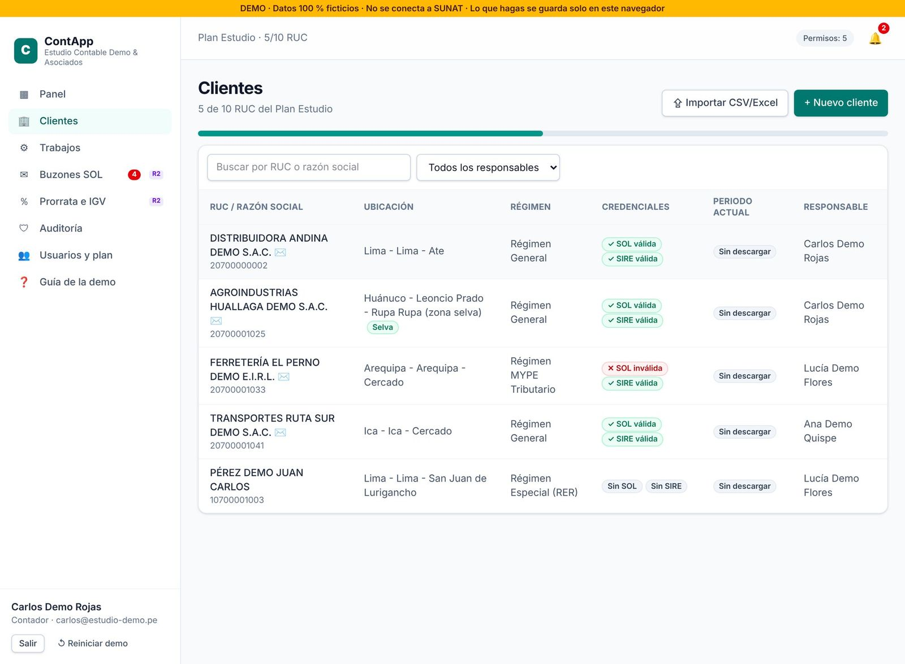
Lista de clientes con credenciales y estado del periodo.
Agregar un cliente con consulta RUC
En Clientes pulsa + Nuevo cliente.
Escribe el RUC (11 dígitos) o haz clic en uno de los RUC ficticios de prueba que aparecen debajo del campo.
Pulsa Consultar. El sistema valida el dígito verificador y trae razón social, ubicación, actividad y régimen.
Elige el responsable del cliente.
Opcional: escribe usuario y clave SOL, y client_id/client_secret del SIRE. En la demo cualquier valor sirve y no se guarda.
Pulsa Guardar cliente. Si pusiste credenciales, se lanza un trabajo que las verifica en segundo plano.
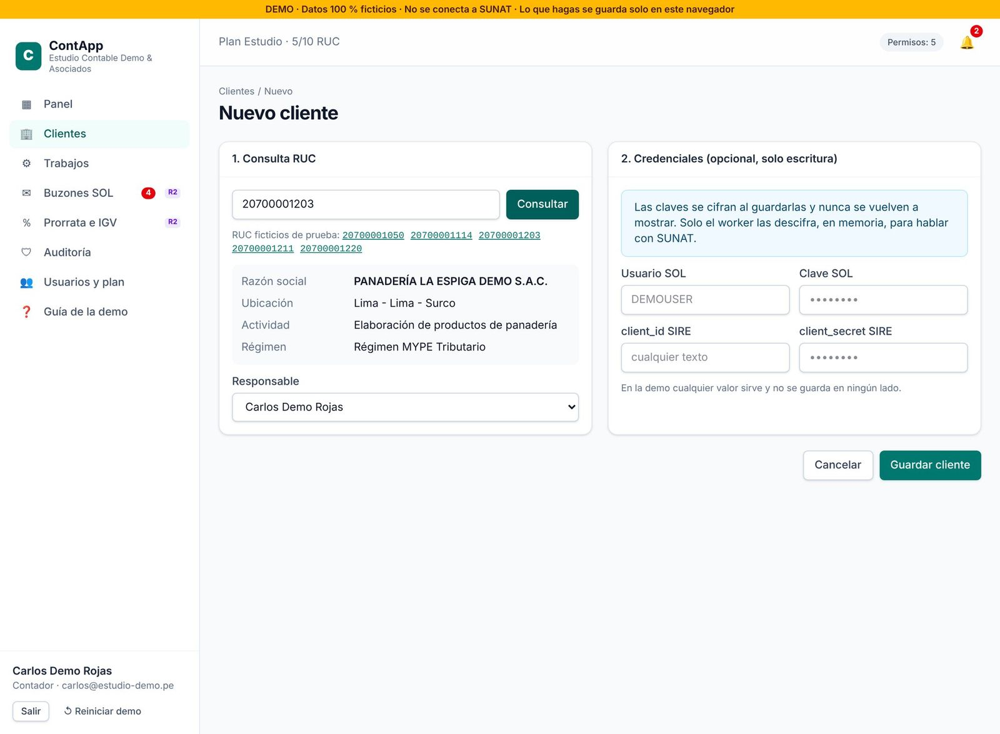
Alta de cliente: consulta RUC y credenciales de solo escritura.
Seguridad (como en el producto): las claves son de solo escritura. Se cifran al guardarlas, nunca se vuelven a mostrar y solo el proceso que habla con SUNAT las descifra, en memoria. Cada descifrado queda en la auditoría.
Importar varios clientes (CSV o Excel)
En Clientes pulsa ⇪ Importar CSV/Excel.
Sube un archivo .csv o edita el ejemplo que ya viene cargado. Columnas: ruc, usuario_sol, responsable.
Revisa la vista previa: cada línea dice «Se importará» o el motivo del rechazo (RUC inválido, ya es cliente, duplicado en el archivo, no existe en el padrón o supera el cupo del plan).
Pulsa Importar N cliente(s). Solo entran las líneas válidas.
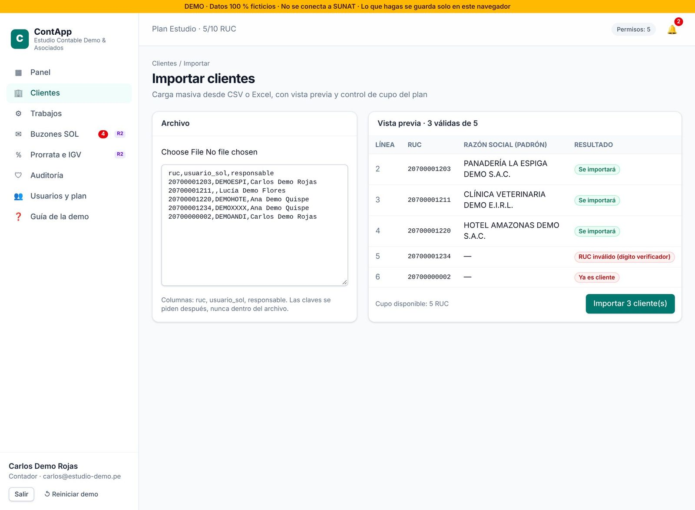
Importación masiva con vista previa y control de cupo.
Ficha del cliente
Al abrir un cliente ves:
Datos fiscales y su perfil. Por ejemplo, «Zona selva» y «Ventas exoneradas → compras a DNG».
Credenciales: estado de SOL y SIRE y el botón Actualizar.
Periodos: el periodo en curso (para abrirlo) y los ya presentados. Los ajustes a periodos pasados llegan en la release 3.
Reglas aprendidasR2: ver el capítulo 8.
Si una clave SOL dejó de funcionar
El cliente FERRETERÍA EL PERNO DEMO trae la clave SOL inválida a propósito. Verás un aviso rojo. Pulsa Actualizar clave SOL, escribe cualquier valor y Guardar y verificar. En unos segundos el estado pasa a «✓ SOL válida».
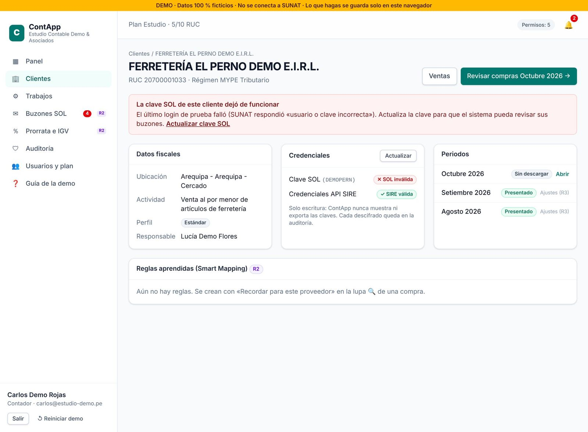
Ficha de un cliente con la clave SOL inválida.
4. Trabajos en segundo plano y notificaciones
Las tareas que en el producto hablan con SUNAT corren en segundo plano: descargar propuestas y XML, verificar credenciales, revisar buzones y enviar archivos. Mientras trabajan puedes seguir usando la aplicación.
Abajo a la derecha aparece una tarjeta flotante con el avance de los trabajos en curso.
El menú Trabajos muestra el historial completo: en cola, ejecutando, completado o fallido.
Al terminar, llega una notificación a la campana 🔔 con un enlace directo al resultado.
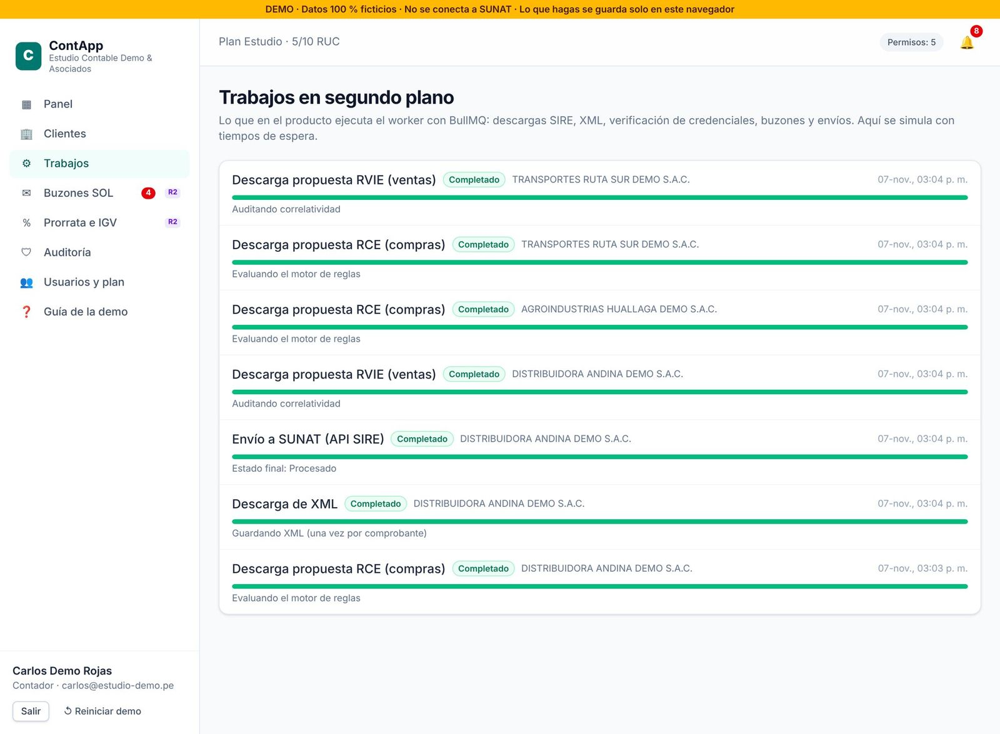
Historial de trabajos en segundo plano.
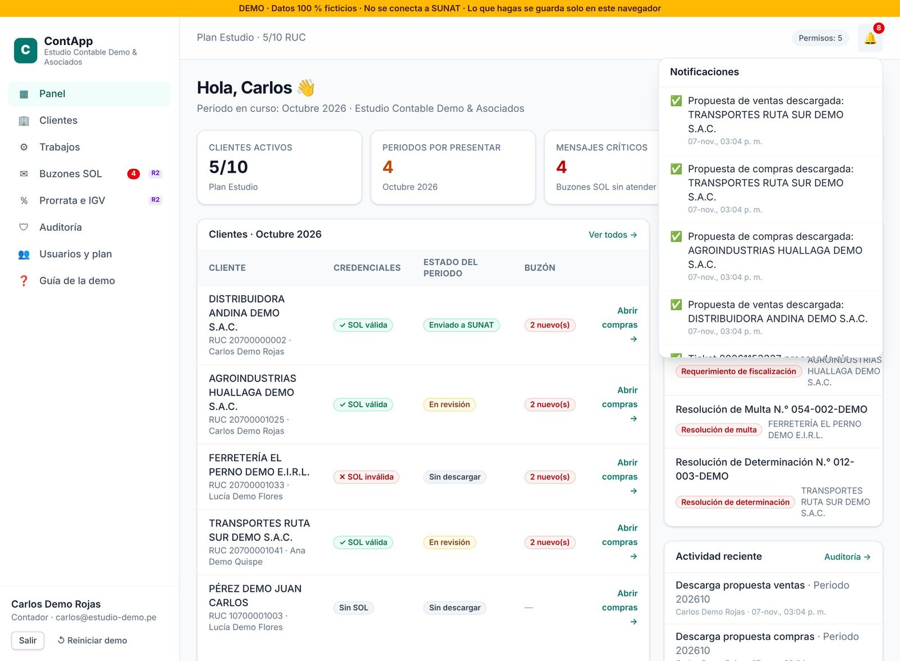
Campana de notificaciones: alertas de credenciales, buzones y trabajos terminados.
5. Registro de Ventas (RVIE)
Para llegar: Clientes → (cliente) → Ventas, o la pestaña Ventas (RVIE) dentro del periodo. Cada periodo tiene tres pestañas: Ventas, Compras y Generar archivo.
Descargar la propuesta
Pulsa ⤓ Descargar propuesta SIRE. Si el cliente no tiene credenciales SIRE, usa ⇪ Importar TXT/Excel de SUNAT.
Verás los pasos del trabajo: descifrar credenciales, autenticarse, pedir el ticket, descargar y auditar.
Al terminar aparece la grilla de ventas.
Auditoría de correlatividad
El sistema ordena los comprobantes por tipo y serie y busca saltos en la numeración. En DISTRIBUIDORA ANDINA DEMO verás el caso real del video: falta la boleta B001-291 entre la 290 y la 292. El SIRE no la trajo y el contador habría declarado sin notarlo.
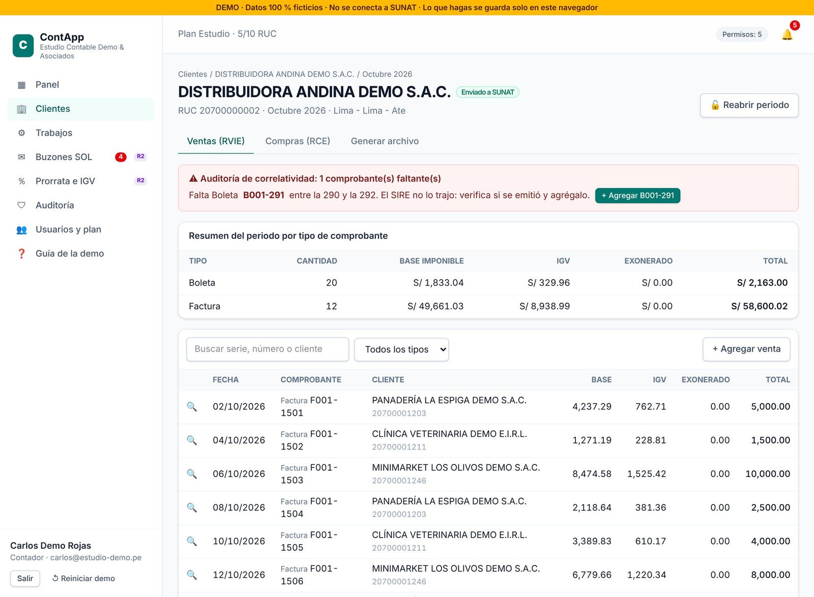
Auditoría de correlatividad: falta la boleta B001-291.
Agregar la venta faltante
En el aviso rojo pulsa + Agregar B001-291. El formulario ya trae tipo, serie y número.
Escribe la base imponible. El IGV (18 %) y el total se calculan solos.
Pulsa Agregar. La fila aparece marcada como «Agregada» y el aviso cambia a ✓ Numeración completa.
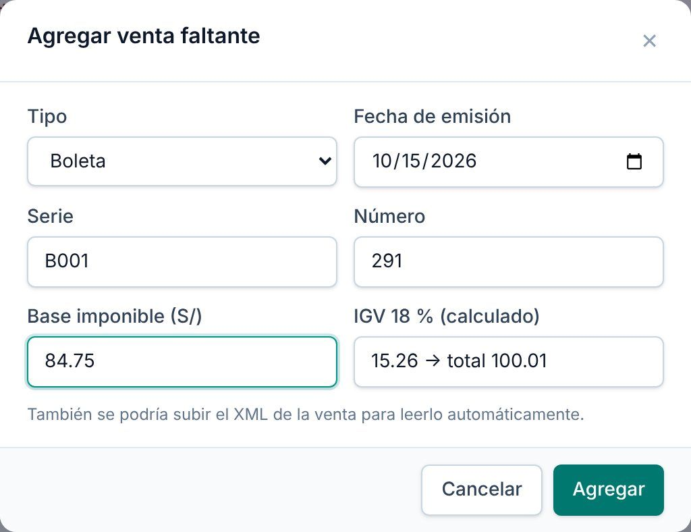
Formulario para agregar la venta faltante.
Resumen, filtros y detalle
Resumen por tipo de comprobante: cantidad, base, IGV, exonerado y total.
Búsqueda por serie, número o cliente; filtro por tipo; paginación de 10, 25, 50 o todas.
La lupa 🔍 de cada venta muestra su detalle y origen (portal SUNAT o sistema propio).
+ Agregar venta permite registrar cualquier venta que el SIRE no trajo.
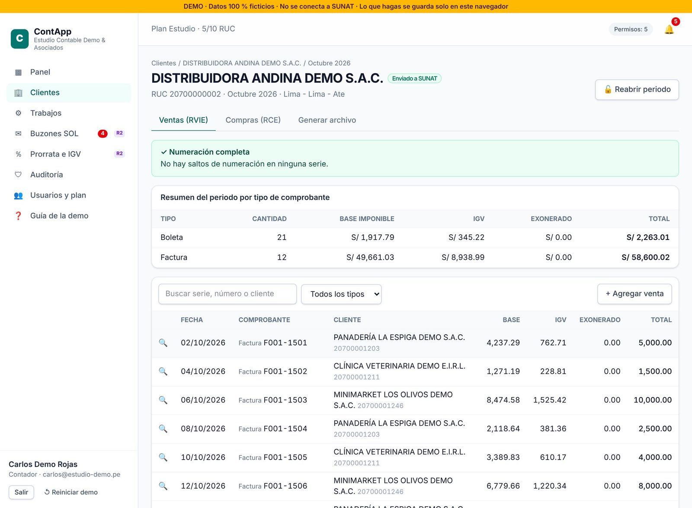
Después de agregar la B001-291: numeración completa.
6. Registro de Compras (RCE)
Aquí están casi todos los errores del SIRE, que por defecto manda todo a DG. Es el corazón de ContApp.
Sigue los 7 pasos del trabajo. Los dos últimos son obtener los XML de cada comprobante y evaluar el motor de reglas.
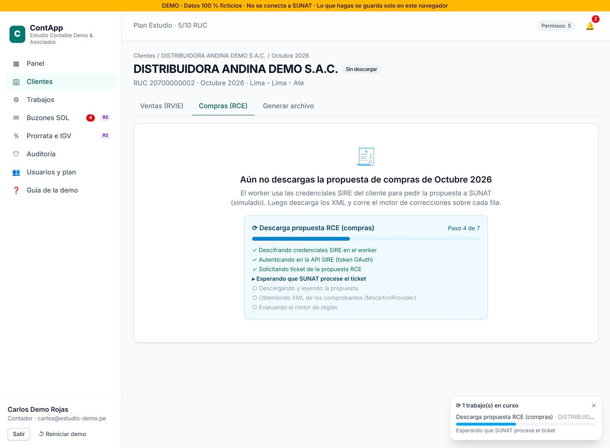
Descarga en curso con el detalle de cada paso.
La grilla de compras
Cada fila es un comprobante. Columnas: fecha, comprobante, proveedor, clasificación (DG / DGNG / DNG), BI e IGV de cada destino, no gravado, ISC, ICBPER, otros tributos, total y las reglas que disparó.
El aviso ámbar superior dice cuántas observaciones encontró el motor. Ninguna se aplica sola.
Marcas en la fila: USD comprobante en dólares, sin XML XML no disponible, Nuevo proveedor nuevo para el cliente.
Las celdas resaltadas en amarillo son los montos que leyó la regla. Un ● rojo junto al total indica que la fila no cuadra.
Segmentos: Todas · Con observaciones · Con IGV · Sin IGV (no generan crédito fiscal) · Excluidas.
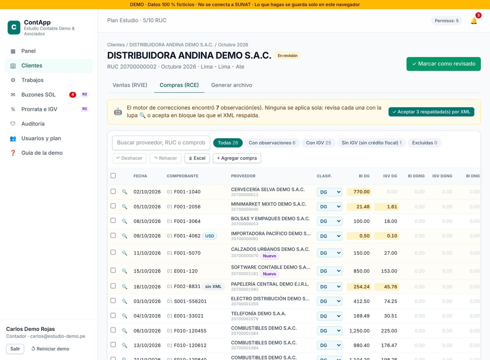
Grilla de compras con las observaciones del motor.
El motor de correcciones
Regla
Qué detecta
Qué sugiere y cómo se resuelve
R-ISC
Base gravada con IGV 0, o proveedor del catálogo de «emisores de ISC».
Mover el monto a la columna ISC. Si el XML lo confirma, se acepta sin preguntar.
R-MIX
IGV que no es el 18 % ni el 10 % de la base: factura mixta.
Separar gravado y no gravado. Con XML usa el monto exacto; sin XML muestra un rango (el IGV viene redondeado) y tú confirmas el gravado.
R-RED
La suma de componentes no da el total, o la conversión de dólares no cuadra.
Ajustar el monto para que SUNAT no lo devuelva «procesado con errores».
R-NEW
Proveedor que nunca apareció en este cliente.
Elegir la clasificación (DG / DGNG / DNG) y, si quieres, que el sistema la recuerde.
R-GP
Glosa del XML con palabras de consumo personal (zapatillas, juguetes…).
Excluirla como no deducible, o indicar que «es del negocio».
R-HISR2
Proveedor con una clasificación aprendida distinta a la del SIRE.
Pasar la fila a la clasificación del historial.
Aceptar en bloque: el botón ✓ Aceptar N respaldada(s) por XML del aviso ámbar aplica de una vez todas las sugerencias que el XML confirma. Las que necesitan tu criterio quedan pendientes.
La lupa 🔍: el detalle del comprobante
Pulsa la 🔍 de cualquier fila, o haz clic en la etiqueta de una regla. Se abre una ventana con todo lo necesario para decidir sin salir de la tabla:
Cabecera: proveedor, RUC, «Proveedor nuevo», «Catálogo: emisor de ISC», fecha, moneda y tipo de cambio, y origen (portal SUNAT «E…» o sistema propio «F…»).
Ítems del XML en lenguaje humano: descripción, cantidad, precio unitario, valor, afectación (gravado, exonerado, inafecto), IGV, ISC e ICBPER por línea.
Comparación SIRE vs XML: las diferencias se resaltan en rojo (SIRE) y verde (XML).
Observaciones del motor, cada una con su explicación y sus botones.
Fila corregida propuesta: cómo quedaría la fila si aceptas.
Acciones: cambiar clasificación, «★ Recordar para este proveedor» y «No deducible».
Historial de este proveedor en el cliente.
XML: «Ver XML», «Descargar XML» y «PDF (representación impresa)».
Atajos de teclado:←→ comprobante anterior o siguiente · Enter aceptar la sugerencia · Esc cerrar.
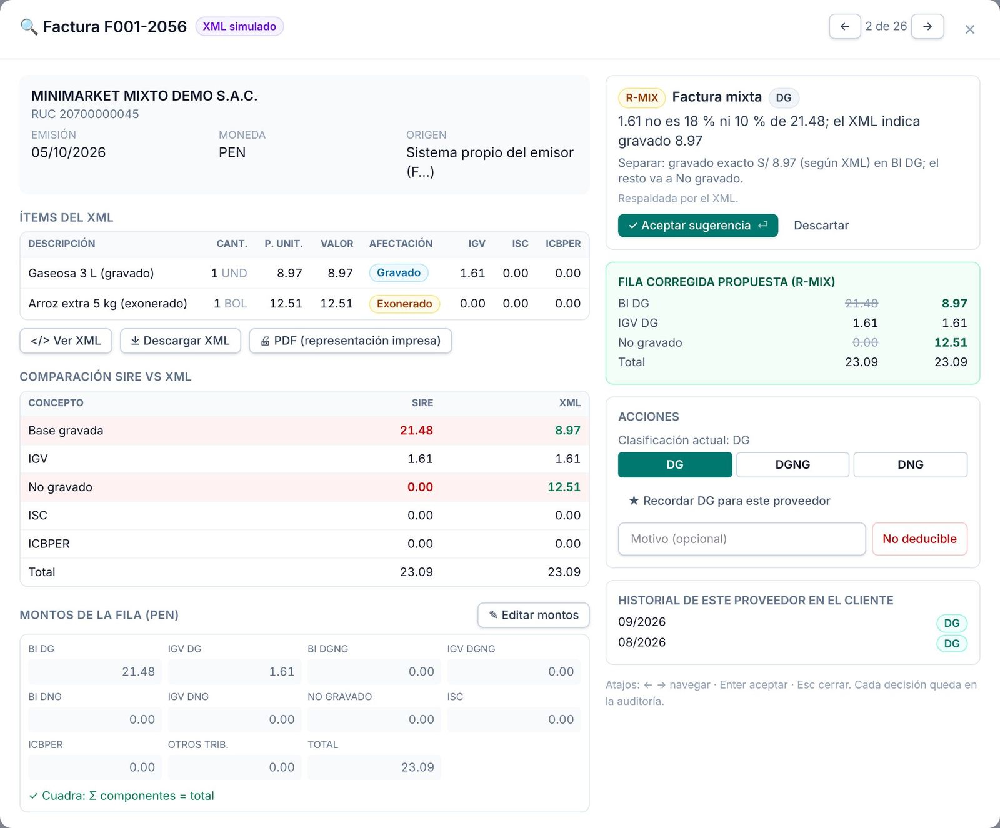
Lupa de la factura mixta F001-2056: el XML da el gravado exacto 8.97.
Casos resueltos uno por uno
Caso 1 · Cerveza con ISC enviada a DG (F001-1040) R-ISC
El SIRE trae 770.00 en BI DG con IGV 0. El XML dice que esos 770.00 son ISC. En la lupa pulsa ✓ Aceptar sugerencia: el monto pasa de BI DG a ISC y la fila deja de ser observada.
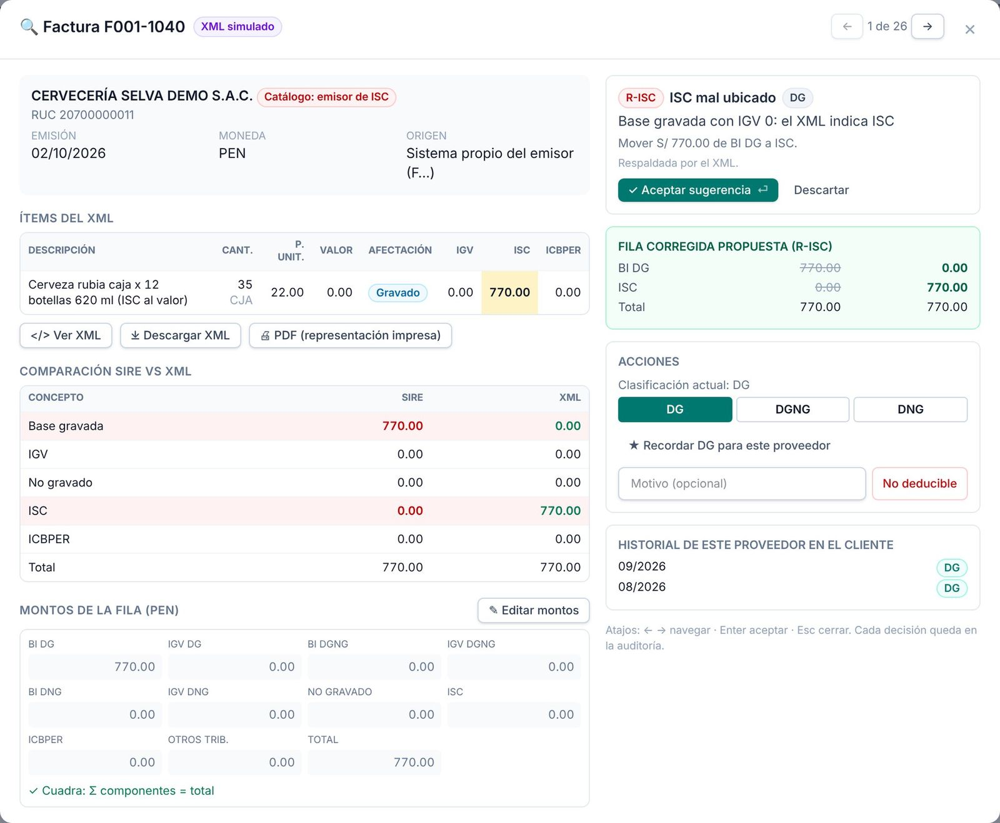
R-ISC respaldada por el XML.
Caso 2 · Factura mixta con XML (F001-2056) R-MIX
Base 21.48 con IGV 1.61: no cuadra con el 18 % ni con el 10 %. Sin XML el gravado estaría entre 8.92 y 8.97. El XML trae el exacto: 8.97 gravado y 12.51 no gravado. Pulsa Aceptar sugerencia.
Caso 3 · Factura mixta sin XML (TRANSPORTES RUTA SUR · F001-7811) R-MIX
Base 1,500.00 con IGV 171.00. Sin XML, el sistema propone un rango (949.98 – 950.02) y un estimado. Escribe el gravado confirmado en el campo Gravado y pulsa Aceptar. Si escribes un monto fuera del rango, el sistema no lo acepta. También puedes pulsar ⟳ Reintentar descarga para obtener el XML con el monto exacto.
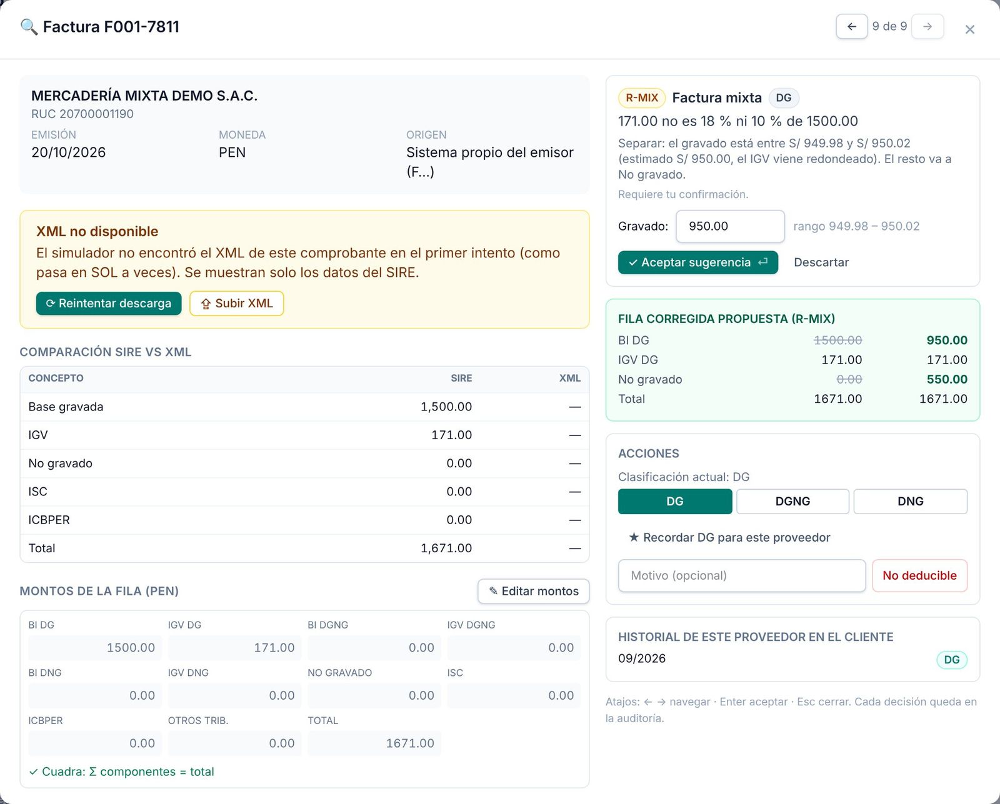
R-MIX sin XML: el contador confirma el gravado dentro del rango.
Caso 4 · Redondeo en dólares (F001-4062) R-RED
Comprobante de USD 0.15 + 0.03 con tipo de cambio 3.300. Convertido componente por componente da 0.50 + 0.10 = 0.60, pero el SIRE trae 0.59. SUNAT lo devolvería «procesado con errores». Acepta el ajuste.
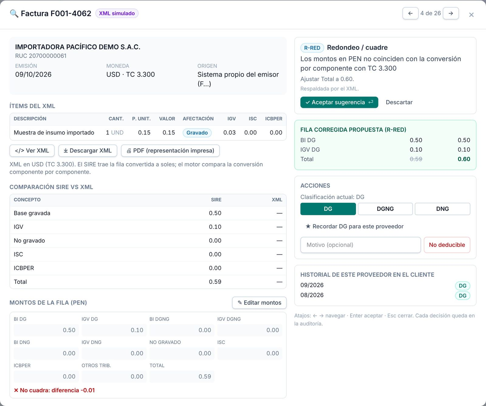
R-RED: diferencia por conversión de dólares.
Caso 5 · Zapatillas en una distribuidora (F001-5070) R-NEWR-GP
Proveedor nuevo cuya glosa dice «Par de zapatillas deportivas». La línea del XML se resalta en rojo. Tienes dos decisiones:
R-GP:Excluir (no deducible) si es un gasto del dueño, o Es del negocio si no lo es.
R-NEW: si la mantienes, elige DG, DGNG o DNG, marca «Recordar para este proveedor» y acepta.
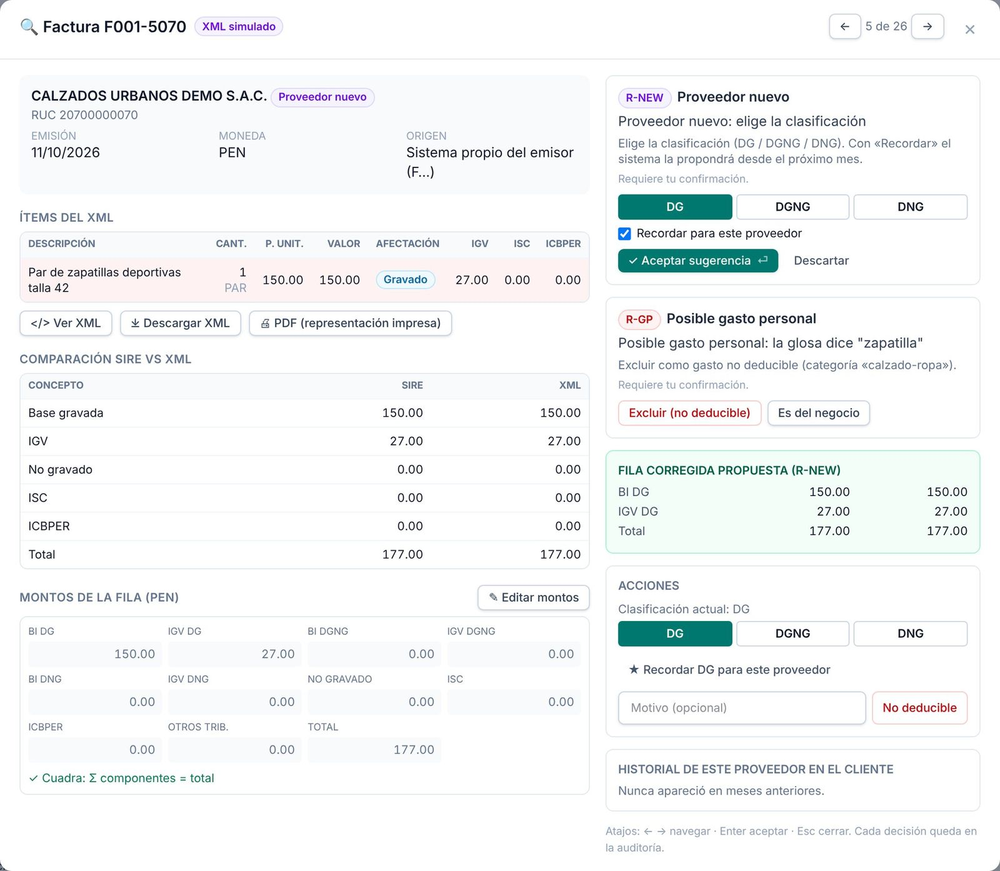
Proveedor nuevo y posible gasto personal en el mismo comprobante.
Caso 6 · Comprobante sin XML y que no cuadra (F002-8831) R-RED
El total es 300.01 y los componentes suman 300.00. El XML no se encontró en el primer intento (pasa en SOL a veces). En la lupa:
⟳ Reintentar descarga: el simulador lo obtiene en unos segundos.
⇪ Subir XML: arrastra un archivo UBL 2.1. El sistema lo lee y verifica que el emisor sea el correcto.
Con el XML disponible, acepta el ajuste del total. Esta fila es la que bloquea la generación mientras no se corrija (ver capítulo 7).
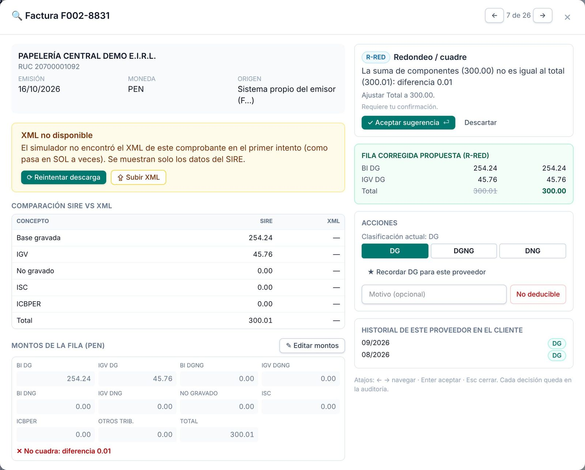
XML no disponible: reintentar o subir el XML.
Edición tipo Excel
Haz clic en cualquier monto de la grilla. Se convierte en un campo editable.
Escribe el nuevo valor y pulsa Enter (o Esc para cancelar). Un valor inválido se marca en rojo.
Con la casilla «Recalcular el total al editar una celda» activada (abajo de la grilla), el total se recalcula solo. Si editas el total a mano, el ● rojo avisa si la fila deja de cuadrar.
En la lupa, ✎ Editar montos abre todos los montos de la fila a la vez, con el cuadre en vivo («✓ Cuadra» o «✕ No cuadra: diferencia…»).
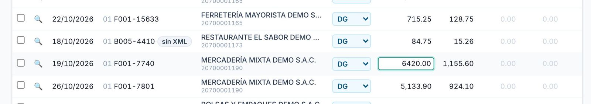
Edición de una celda directamente en la grilla.
Clasificación individual y masiva
Una fila: cambia el desplegable de la columna «Clasif.». Los montos de BI e IGV se mueven solos a la columna del nuevo destino.
Varias filas: marca las casillas de la izquierda (o la del encabezado para todas las visibles). Aparece la barra «N seleccionada(s)» con los botones DG, DGNG, DNG y Excluir.
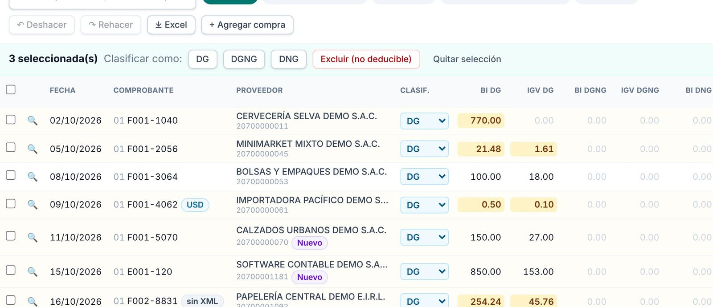
Barra de acciones masivas sobre las filas seleccionadas.
Excluir y restaurar
Una compra excluida («No deducible») queda tachada, deja de sumar y se ve en el segmento Excluidas. Puedes escribir un motivo. Para revertirla pulsa Restaurar en la columna de clasificación o en la lupa.
Deshacer y rehacer
Botones ↶ Deshacer y ↷ Rehacer en la barra de la grilla, o los atajos Ctrl+Z y Ctrl+Y. Funcionan para cualquier cambio del periodo.
Agregar una compra y exportar
+ Agregar compra: registra un comprobante que el SIRE no propuso (RUC del proveedor validado, serie, número, fecha, base y clasificación; el IGV se calcula solo). Queda marcado como agregado.
⤓ Excel: descarga la grilla del periodo en CSV, que se abre en Excel, con las observaciones de cada fila.
Resumen por casillero
Debajo de la grilla se compara, casillero por casillero (BI e IGV de DG, DGNG y DNG, no gravado, ISC, ICBPER, otros y total), la propuesta original del SIRE con la corregida. La diferencia aparece en verde o en rojo.
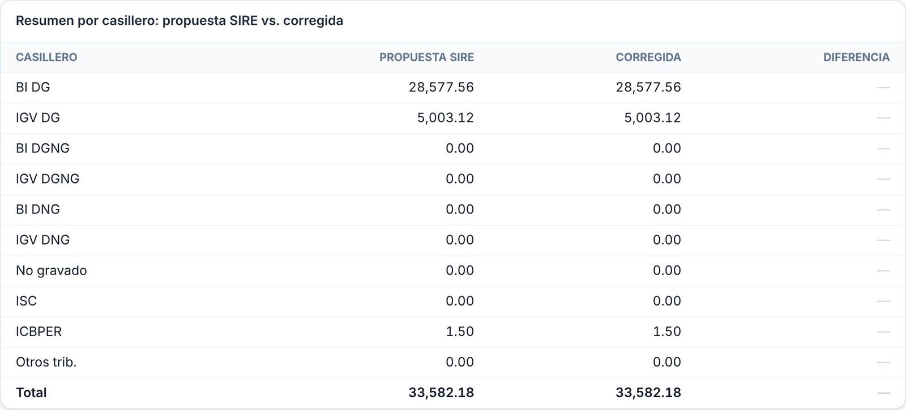
Resumen por casillero: propuesta SIRE frente a corregida.
Marcar el periodo como revisado
Cuando termines, pulsa ✓ Marcar como revisado (arriba a la derecha del periodo). La edición queda bloqueada para quien no tenga el permiso de aprobar y generar, como el Asistente. Para volver a editar, 🔓 Reabrir periodo.
7. Generar el archivo para SUNAT
Pestaña Generar archivo del periodo.
Resumen de cambios
Cuatro indicadores: filas modificadas, excluidas y agregadas, y el impacto en el IGV (crédito fiscal) por destino frente a la propuesta original.
Prevalidación SUNAT
Antes de generar, cada fila pasa por las reglas de estructura y cuadre de SUNAT. Si hay errores bloqueantes, no se permite generar: la lista dice qué fila falla y por qué, con el botón 🔍 Corregir que abre la lupa en esa fila. Los avisos (por ejemplo, un proveedor nuevo sin clasificar) no bloquean.
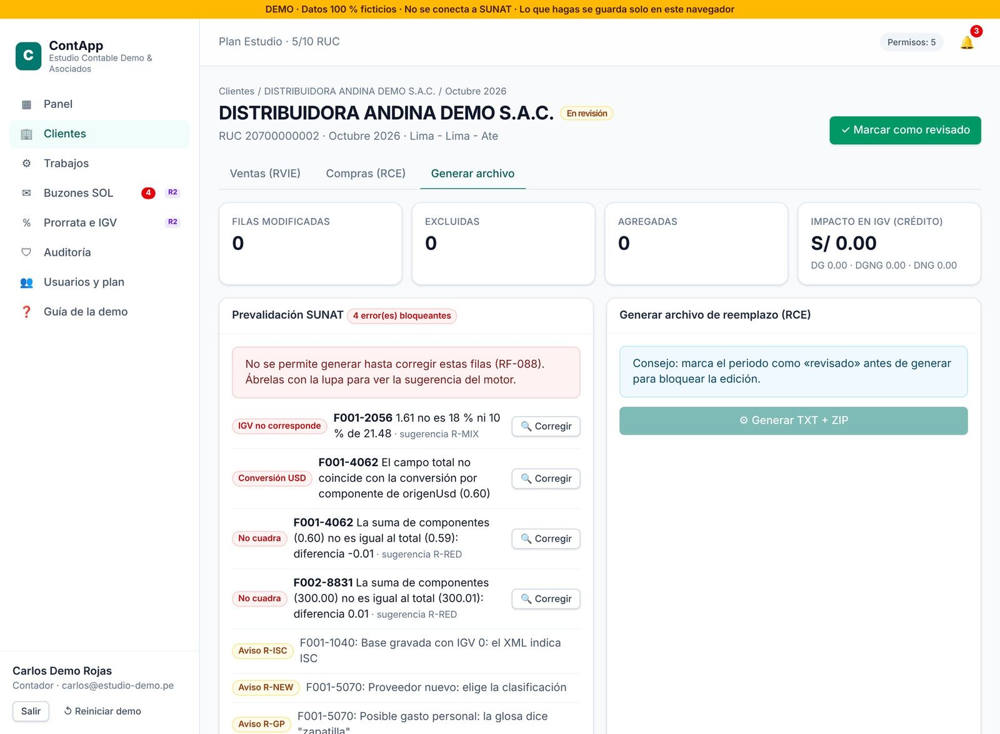
Prevalidación con un error bloqueante (la fila F002-8831 no cuadra).
Generar el TXT y el ZIP
Corrige los errores hasta ver «Apto para generar».
Recomendado: marca el periodo como revisado.
Pulsa ⚙ Generar TXT + ZIP. Verás la vista previa del TXT y la nueva versión en la tabla.
Pulsa ⤓ ZIP para descargar el archivo. El ZIP lleva el nombre que exige el formato e incluye el TXT.
Versiones y envío a SUNAT R2
Cada generación guarda versión, usuario, fecha y huella SHA-256. Puedes descargar cualquier versión anterior.
Enviar a SUNAT simula el envío por la API SIRE: recibe un ticket y sigue su estado hasta ✓ Procesado. Al terminar llega una notificación.
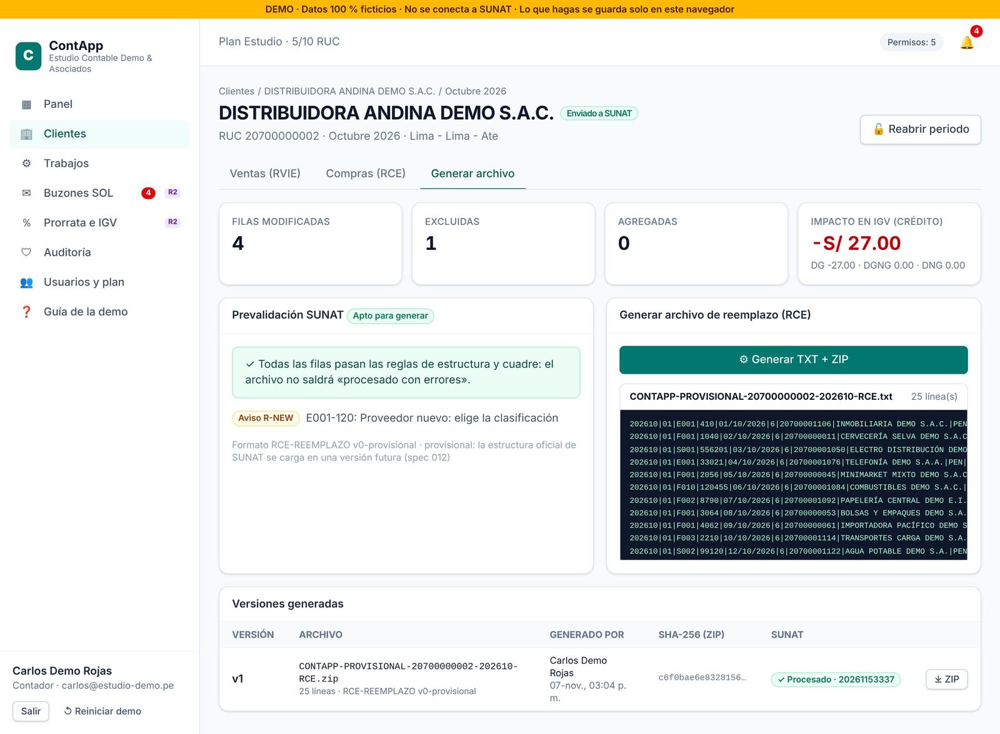
Archivo generado (v1) y enviado a SUNAT con el ticket procesado.
Importante: el TXT usa la estructura provisional del motor (el nombre lo dice: «CONTAPP-PROVISIONAL»). La estructura oficial de SUNAT se cargará en una versión futura. No subas este archivo a SUNAT.
Solo Contador y Administrador pueden generar. Si entras como Asistente verás el botón desactivado y el motivo.
8. Funciones de la release 2 (vista previa)
Clasificación según historial: cliente de la selva
AGROINDUSTRIAS HUALLAGA DEMO está en Huánuco (zona selva) y sus ventas son exoneradas. Por eso sus compras deben ir a DNG, pero el SIRE las manda todas a DG. Como el estudio ya las clasificó en meses anteriores, el sistema sugiere R-HIS → DNG en cada fila.
Abre las compras del cliente y descarga la propuesta.
Pulsa ✓ Aplicar N según historial en el aviso, o ve fila por fila con la lupa (✓ Pasar a DNG).
Revisa lo que queda: la cerveza sin XML (R-ISC) y el proveedor nuevo (R-NEW, donde el sistema recomienda DNG por el perfil del cliente).
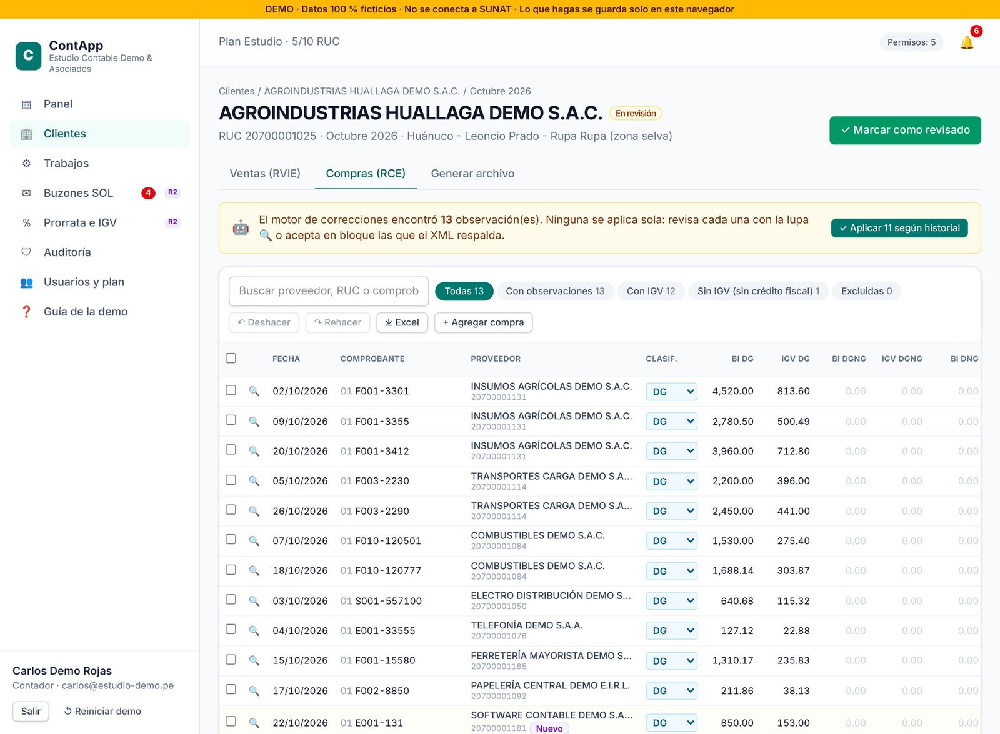
Cliente de la selva: sugerencias «según historial» para pasar a DNG.
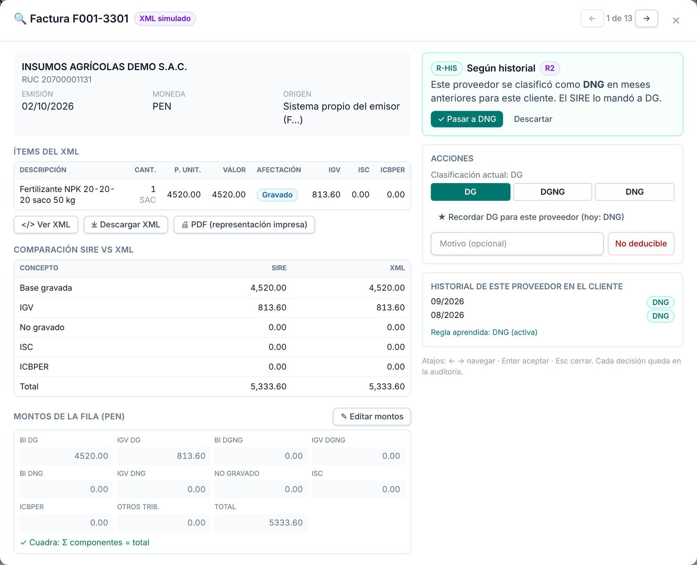
Lupa con la sugerencia R-HIS y el historial del proveedor.
Reglas aprendidas (Smart Mapping)
Cada vez que usas «★ Recordar para este proveedor», se crea o actualiza una regla del cliente. En la ficha del cliente ves sus reglas, cuántas veces se aplicaron y se aceptaron, y puedes desactivarlas o eliminarlas. Las reglas son de cada cliente y nunca se comparten entre estudios.
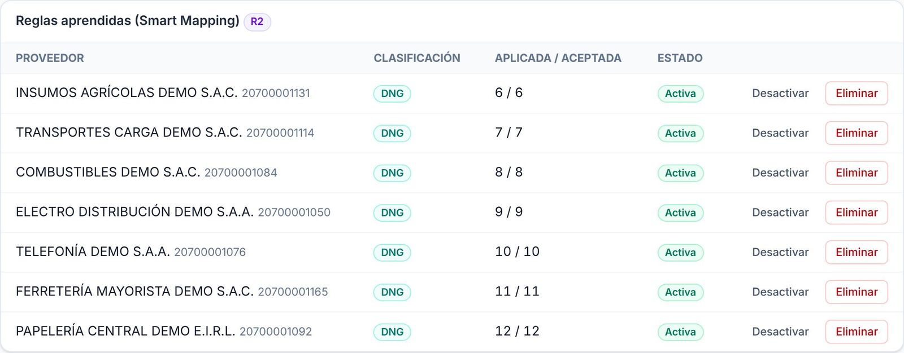
Reglas aprendidas de un cliente.
Buzones electrónicos SOL
Menú Buzones SOL. Es una bandeja unificada con los mensajes de todos los clientes:
Los críticos (cobranza coactiva, resoluciones de determinación o multa, requerimientos de fiscalización) se resaltan en rojo con 🚨.
Filtros: Sin atender, Críticos, Todos y por cliente.
⟳ Revisar ahora lanza la revisión de todos los buzones. Revisar no marca el mensaje como leído en SUNAT; eso solo pasa cuando abres el mensaje.
Al abrir un mensaje puedes ver el contenido, descargar el adjunto y Marcar como atendido con un comentario interno.
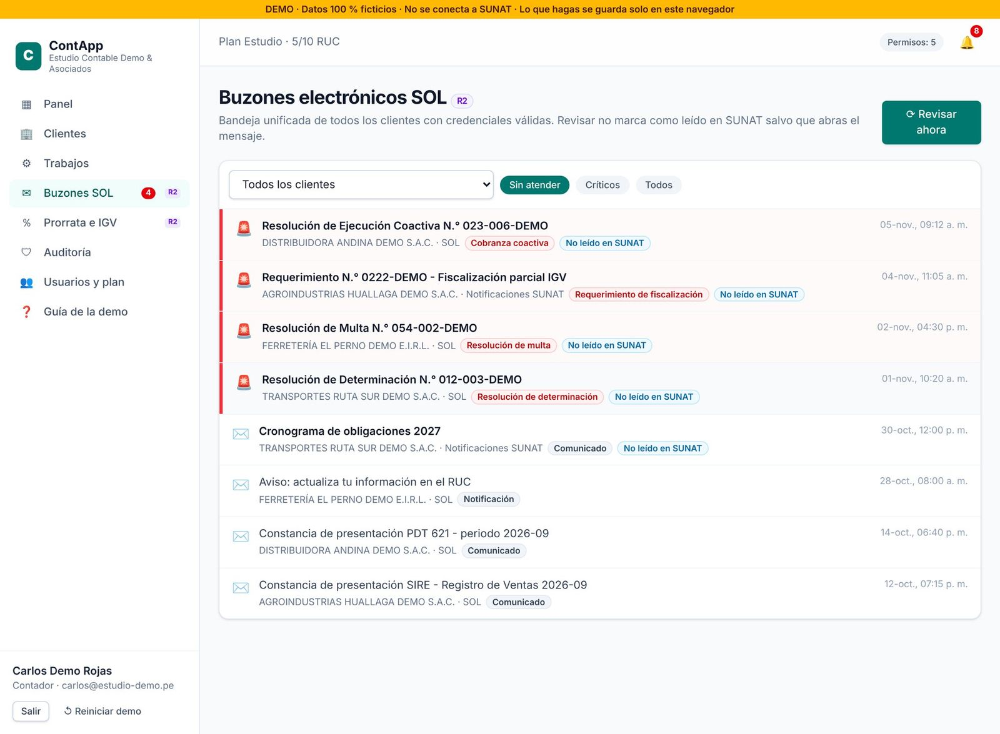
Bandeja unificada de buzones SOL.
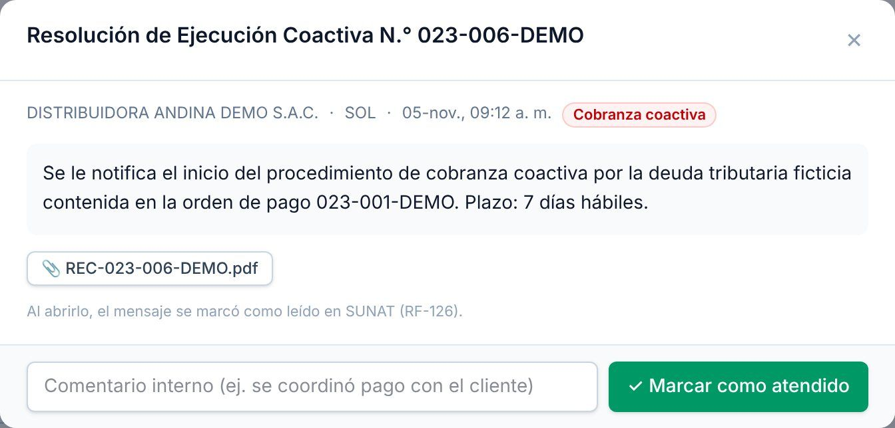
Mensaje crítico abierto, listo para marcar como atendido.
Prorrata e IGV estimado
Menú Prorrata e IGV. Elige el cliente arriba a la derecha (TRANSPORTES RUTA SUR DEMO o DISTRIBUIDORA ANDINA DEMO).
El coeficiente de prorrata se calcula con los montos declarados en el PDT 621 de los últimos 12 meses: ventas gravadas ÷ ventas totales.
El gráfico mes a mes muestra gravadas (verde) y no gravadas (ámbar), con el origen de cada dato.
Mes faltante: si SOL no devolvió un mes, aparece un aviso. Pulsa Ingresar ahora (o el ✎ del mes) y escribe los montos; queda marcado como «Manual».
IGV estimado del mes: IGV de ventas − crédito DG − crédito DGNG × prorrata. Indica si hay saldo a favor o IGV a pagar. Para verlo, descarga antes las ventas y compras del periodo de ese cliente.
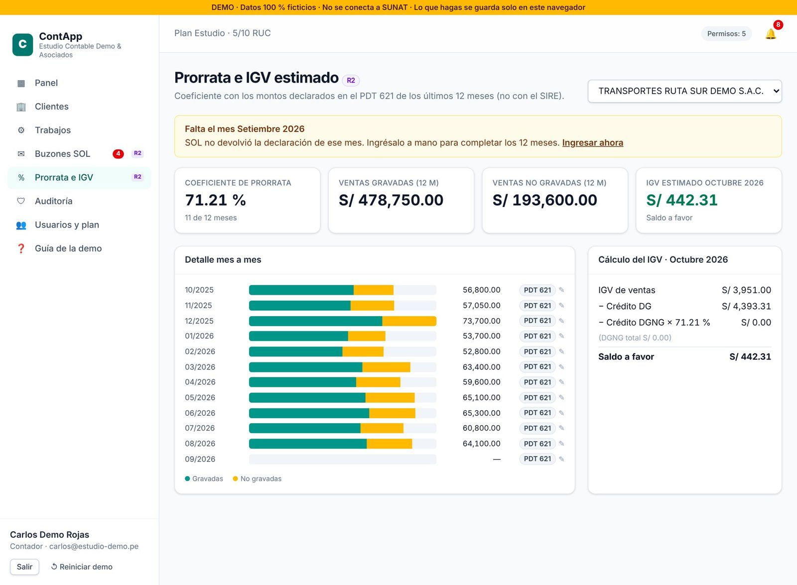
Prorrata con un mes faltante y el cálculo del IGV.
9. Auditoría, usuarios, roles y plan
Auditoría
Menú Auditoría. Registro de solo lectura de todo lo que pasa: inicios de sesión, altas de clientes, cambios de credenciales, cada cambio en una fila (valor anterior → nuevo), exclusiones, reglas aprendidas, archivos generados y envíos a SUNAT. Puedes buscar por texto y filtrar por usuario.
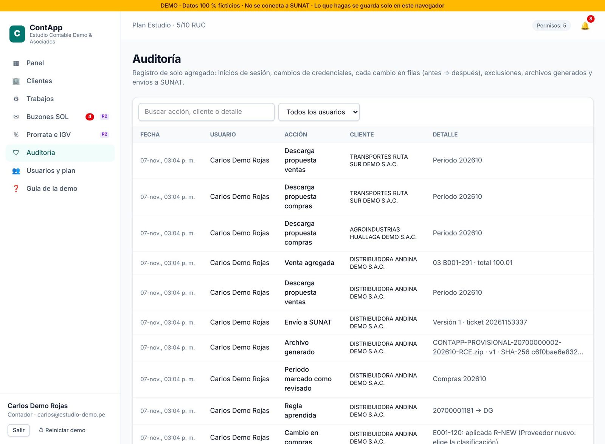
Auditoría de las acciones del equipo.
Usuarios y plan
Menú Usuarios y plan. Muestra el uso del plan (RUC y usuarios frente a los límites), la frecuencia de revisión de buzones, el estado de la suscripción, los usuarios con sus clientes asignados y la matriz de permisos por rol.
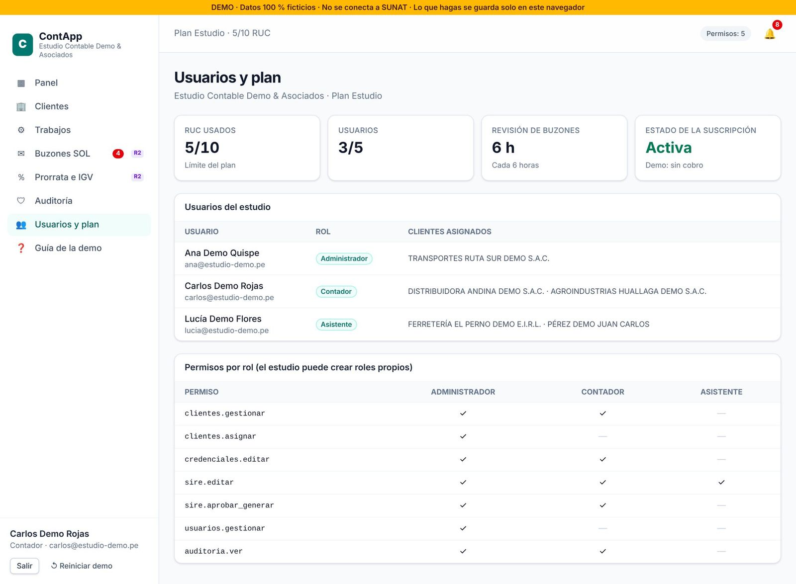
Uso del plan, usuarios y permisos por rol.
Probar los permisos
Pulsa Salir y entra como Lucía Demo Flores (Asistente). En «Generar archivo» el botón aparece desactivado con el motivo, y si el periodo está revisado no podrá editar las compras.
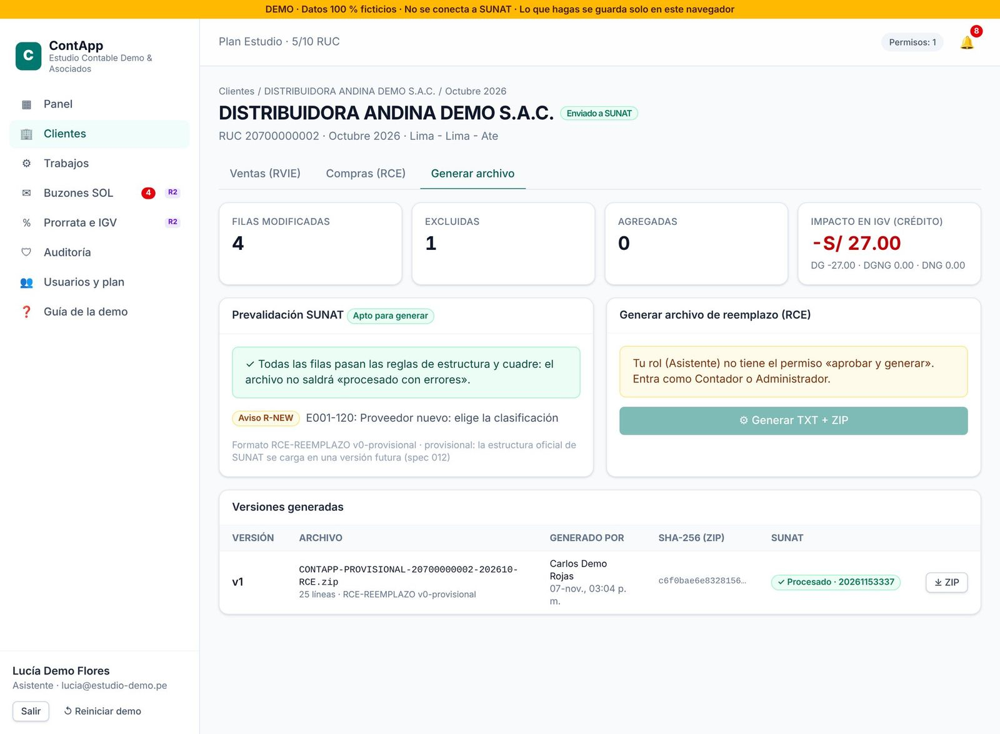
Vista de la Asistente: puede revisar, pero no generar.
10. Recorrido sugerido de 10 minutos
También está dentro de la app, en el menú Guía de la demo, con enlaces directos a cada paso.
#
Qué hacer
Dónde y qué observar
1
Entrar como Contador
Carlos Demo Rojas. Mira el panel.
2
Descargar compras
DISTRIBUIDORA ANDINA DEMO → Compras → Descargar propuesta SIRE. Mira los pasos del trabajo.
3
Cerveza con ISC
Lupa de F001-1040 → Aceptar sugerencia (R-ISC).
4
Factura mixta
Lupa de F001-2056 → el XML da 8.97 exacto (R-MIX).
5
Redondeo en USD
Lupa de F001-4062 → 0.59 frente a 0.60 (R-RED).
6
Gasto personal
Lupa de F001-5070 → Excluir (no deducible) (R-GP).
7
Edición tipo Excel
Edita un monto, mira el cuadre y deshaz con Ctrl+Z.
Generar TXT + ZIP → descargar → Enviar a SUNAT → Procesado.
10
Ventas
Descargar ventas → falta B001-291 → agregarla.
11
Cliente de la selva
AGROINDUSTRIAS HUALLAGA → Compras → Aplicar según historial (DNG).
12
Mixta sin XML
TRANSPORTES RUTA SUR → Compras → F001-7811 → confirmar gravado en el rango.
13
Buzones y credenciales
Buzones SOL → abrir la coactiva → atender. FERRETERÍA EL PERNO → actualizar clave SOL.
14
Prorrata
Prorrata e IGV → ingresar el mes faltante.
15
Roles y auditoría
Salir → entrar como Asistente → ver restricciones. Revisar la Auditoría.
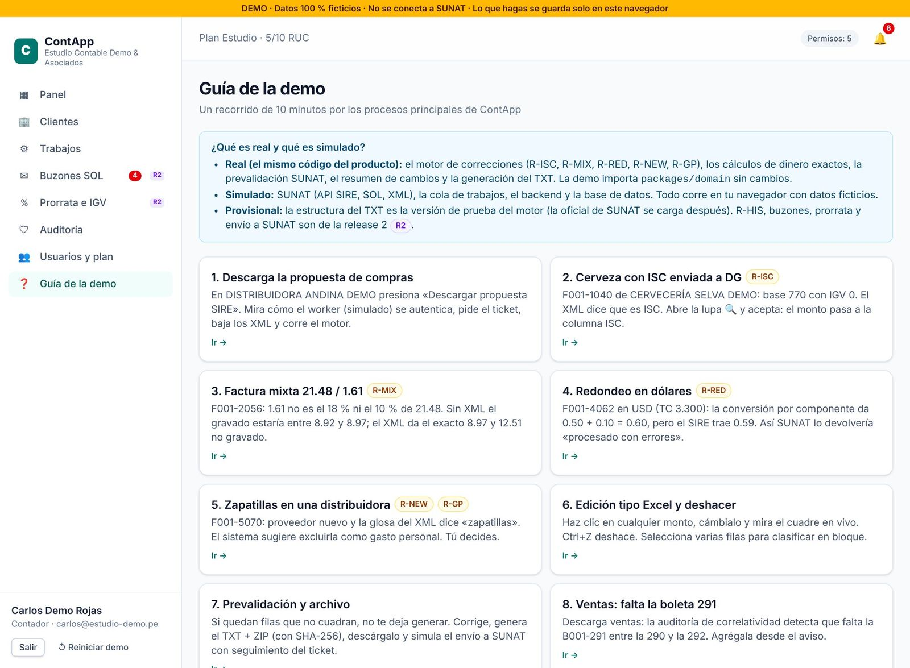
La guía integrada dentro de la app.
11. Datos de prueba y preguntas frecuentes
Recuerda: todo en esta demo es ficticio: estudio, usuarios, clientes, proveedores, montos, mensajes y RUC. Ningún dato corresponde a personas o empresas reales.
Clientes ficticios
Cliente
RUC
Para qué sirve
DISTRIBUIDORA ANDINA DEMO S.A.C.
20700000002
Todos los casos del motor (ISC, mixta, USD, zapatillas, ICBPER, sin XML), la boleta 291 faltante y la prorrata.
AGROINDUSTRIAS HUALLAGA DEMO S.A.C.
20700001025
Zona selva con ventas exoneradas: compras a DNG según historial; cerveza sin XML.
FERRETERÍA EL PERNO DEMO E.I.R.L.
20700001033
Clave SOL inválida; restaurante al 10 % (cuadra, no es mixta); buzón con multa.
TRANSPORTES RUTA SUR DEMO S.A.C.
20700001041
Ventas gravadas y exoneradas: DGNG, mixta sin XML, prorrata con mes faltante.
PÉREZ DEMO JUAN CARLOS
10700001003
Persona natural sin credenciales: importar la propuesta desde archivo.
RUC ficticios para el alta y la importación: 20700001203, 20700001211, 20700001220, 20700001050, 20700001114. El RUC 20700001234 sirve para ver el error de dígito verificador.
Preguntas frecuentes
¿Por qué no puedo generar el archivo?
Puede ser por tres razones: la prevalidación tiene errores bloqueantes (corrígelos con 🔍 Corregir), tu rol es Asistente, o todavía no descargaste las compras del periodo.
¿Por qué una observación no desaparece?
El motor vuelve a evaluar la fila después de cada cambio. Si la corrección no resolvió el problema, la observación sigue. Si no estás de acuerdo con la sugerencia, usa Descartar.
Hice muchos cambios y quiero empezar de nuevo
Usa ↶ Deshacer para los últimos cambios, o ↺ Reiniciar demo para volver todo al estado inicial.
Abrí la demo en otro navegador o computadora y no veo mis cambios
Es normal: la demo guarda los datos solo en el navegador donde trabajas. En el producto real todo se guarda en el servidor, por estudio.
¿Puedo subir el ZIP generado a SUNAT?
No. Usa la estructura provisional y datos ficticios. Solo sirve para ver el proceso.
¿Funciona en el celular?
Sí. El menú se abre con ☰. Para trabajar con la grilla de compras es más cómoda una pantalla grande.